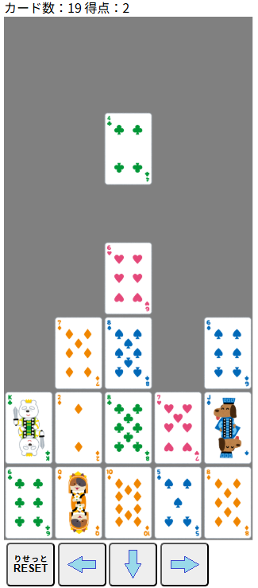

| 【カードドロップ】 |
|
カードドロップ式のポーカーです。
 落ちてくるカードを左右に移動させてポーカーの役を作ろう！ ・各段で5枚揃うと自動的に役判定を行い得点を計算します。 ・役となったカードは消え、消えたカードの上にあったカードが落ちます。 ・すべてのカード(52枚)を使いきるか、真ん中のレーンが7段に積み上がるとゲームオーバーです。 ＜役＞ ロイヤルフラッシュ（30点）： 同じスート（柄）で10・J・Q・K・Aの5枚が連続して揃った役 ストレートフラッシュ（25点）： 同じスートで連続する5枚の数字が揃った役（ロイヤルフラッシュを除く） フォーカード（20点）： 同じ数字が4枚揃った役 フルハウス（15点）： 同じ数字が3枚（スリーカード）と、別の同じ数字が2枚（ワンペア）の組み合わた役 フラッシュ（10点）： 数字に関係なく、同じスート（柄）のカード5枚が揃った役 ストレート（6点）： 数字が連続している5枚のカードが揃った役（スートは問わない） スリーカード（4点）： 同じ数字が3枚揃った役 ツーペア（2点）： 同じ数字のペアが2組ある役 ワンペア（1点）： 同じ数字が2枚揃った役 ・[RESET]ボタンをクリック（タップ）すると最初からやり直す事ができます。 |